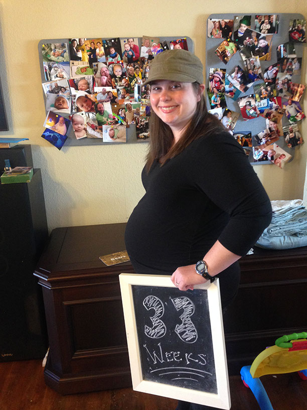

I am a 32-year-old nurse, busy with working in the nursery at Texas Health Presbyterian Hospital of Plano and going to school part time to become a nurse practitioner at Baylor University. I have a loving husband and a 12-month-old son, and we just found out that we are expecting our second child. We are enjoying a life full of adventure and love.
On May 28, 2014 my life changed forever. At 5:00 AM, I woke up to check on my crying child and immediately started having a full-body seizure. My husband heard the fall and my scream; he called 911 and all of a sudden I was in the ER of the hospital where I work. This time, however, I was there as a patient instead of as an employee. After some tests I was told that I had a brain tumor that needed to be followed up at the University of Texas (UT) Southwestern Medical Center due to the tumor being located in a delicate area—my motor strip—where movement is controlled. I was in shock but remained hopeful, because the tumor did not look too aggressive. In 3 weeks I had a follow-up MRI and met the neurosurgeon at UT Southwestern. My neurosurgeon entered the room and told me that the tumor had grown and that surgery was necessary, since the tumor had started to appear aggressive. On June 30, 2014 I underwent neurosurgery to remove the tumor and to find out what type of tumor it is. There was a threat of miscarriage after surgery, but my baby fought through it. Two days later, my neurosurgeon entered the room to give me the news: I have Grade IV glioblastoma multiforme. It is the most aggressive type of brain tumor and the median survival rate is 14 months.
I was devastated and overwhelmed by the choices I would have to make for myself but more importantly for the choices that would affect the baby that I am carrying. I began recovering from surgery and making choices to delay treatment for the health of my baby until I saw new tumor growth. I began feeling better only to return to the ER weeks later, fearing a miscarriage. As it turns out, my baby girl is a fighter and had once again pulled through. At 8-weeks post-surgery, I felt great. I returned to work and life felt like it was getting back to normal. On September 7, 2014, however, my life changed once more. I became sick with a stomach bug and in the middle of the night had two full body seizures, which were followed by two hours of right leg partial seizures. I was taken by ambulance to the hospital where I work, once again as a patient instead of an employee. After many tests I was discharged with a new, normal, everyday life that includes several partial right-leg seizures each day and requires assistance when walking. I had an MRI two weeks later that showed the tumor had returned. For my sake and my baby’s sake treatment became mandatory.
I began radiation treatment on October 7, 2014 while 27-weeks pregnant. As I write this message, I am 34-weeks pregnant and have finished my 6 week course of radiation. I am fighting not only for my life but for my baby girl’s life as well! We plan to deliver her towards the beginning of December before I start chemotherapy the next week. I am writing this to because throughout these trials I am still thankful especially during this season I am alive, my baby is alive, I have the support of my family and friends, and I am thankful I believe in a God who can do anything and provides me with peace and comfort. I cannot control what happens, nor do I know what the future holds, but I can control my attitude about my situation.
In my case, my husband and I are faced with making decisions not only about my health but also about the health of our unborn child. I am trying daily to keep my unborn child and myself safe. Through prayer, support of family and friends, and the help of my team of doctors, as well as my husband, we are making the best choices we can as we go along.
I choose to continue to live each day to the fullest and use what medicine has to offer for the treatment of my brain cancer. My hope and prayer is that we find a cure for brain cancer so that others will not have to be faced with the choice between accepting treatment or death and eventually there will be a cure. For myself, personally, I have chosen to focus on using the available treatments and raising funds to support research and doctors who are trying to find a cure for this devastating disease. I meet with six doctors, along with their nurse practitioners and nurses, on a regular basis. Together, we are going through the steps of treatment with the best knowledge available. This knowledge is limited and more research into brain tumors is needed. Funding is needed for this research, and it has become very clear to me that, while I can, I should help raise funds to find a cure. It is through my faith in God, the love of my family and friends, my team of doctors, and the hope I have in God’s provisions that helps me each day to get up and fight. My goal is to raise awareness for those who are fighting for their lives against terminal brain cancer and to raise money for research to find a cure. If my story can be used for good to raise awareness and funding for research it would make me very happy and I feel the good that can come from this. One thing I have learned from this process is the things people can accomplish when they work together towards a common goal. I have seen strangers and loved ones pull together to support me and my family and now I would like to give back. Please donate to stop this disease and find a cure. I have started this fundraiser where the donations raised will be contributed to UT Southwestern’s research department to find a cure and end brain cancer for good!
"Through him whom we have gained access by faith into this grace in which we now stand. And we rejoice in the hope of the glory of God. Not only so, but we also rejoice in our sufferings, because we know that suffering produces perseverance, perseverance, character, and character, hope" Romans: 5:2-4